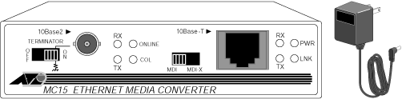

Operating Documentation
Direction 5114045-800, Rev# 10
LightSpeed 4.X Service Information (Advanced)
Operating Documentation |
For additional product information, see Allied Telesyn. web site at www.alliedtelesyn.com.
Illustration 1: AT-MC15 (Allied Telesyn)

The AT-MC15 ( Illustration 1) is a thin-net/twisted pair converter providing a 10Base-2 BNC connection. It converts Ethernet signals from twisted pair cable to thin-net cable and vice versa. An external power supply serves as its power source.
For information on switch settings and LEDs, refer to Media Adapter Settings - Allied Telesyn AT-MC15.
The AT-MC15 draws power from a wall-mount type AC-DC power adapter, which attaches at AT-15’s DC jack. TUV/UL/CSA compliant, the AC power adapter supplies an unregulated output of 12 VDC at 1A. The power required for the AT-MC15 is 12Vdc, 500 mA.